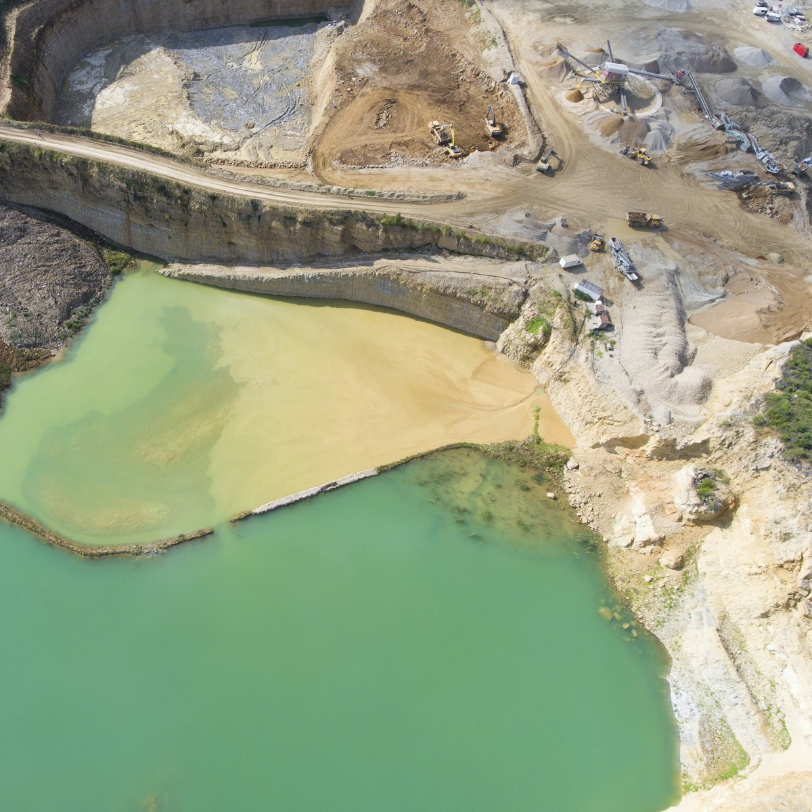

Novaria
25 million people · Lithium & copper
Illustrative photography · A quarry in Poland
Centrally planned → Market opening
Open for business.
Keep control of the resources.
Novaria has valuable lithium and copper, but outdated state factories and tight investment restrictions are holding it back.
Allow private enterprise and foreign investment. Keep majority government ownership in mining partnerships, so new technology arrives without giving away control.
More jobs for young adults, modern production and greater consumer choice.
Greater inequality and foreign influence if contracts and oversight are weak.
Our political recommendation
Presidential democracy
An elected president coordinates infrastructure and industrial projects. Term limits, independent courts, published mining contracts and spending audits keep that authority accountable.
Watch for: favouritism and excessive concentration of executive power.
The investor's view
Best suited to lithium and copper investors that can bring technology and patient capital. Check entry restrictions, reliable power, transport links and partnership terms first.